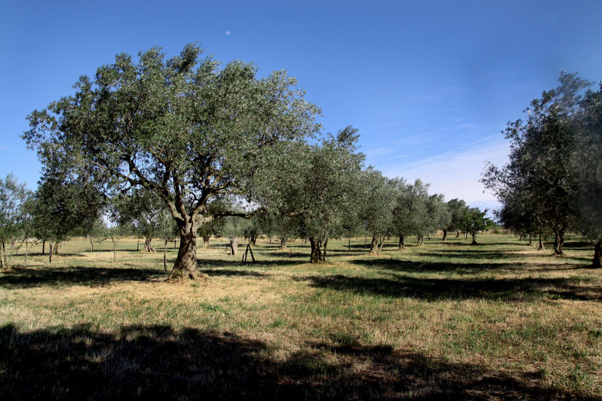
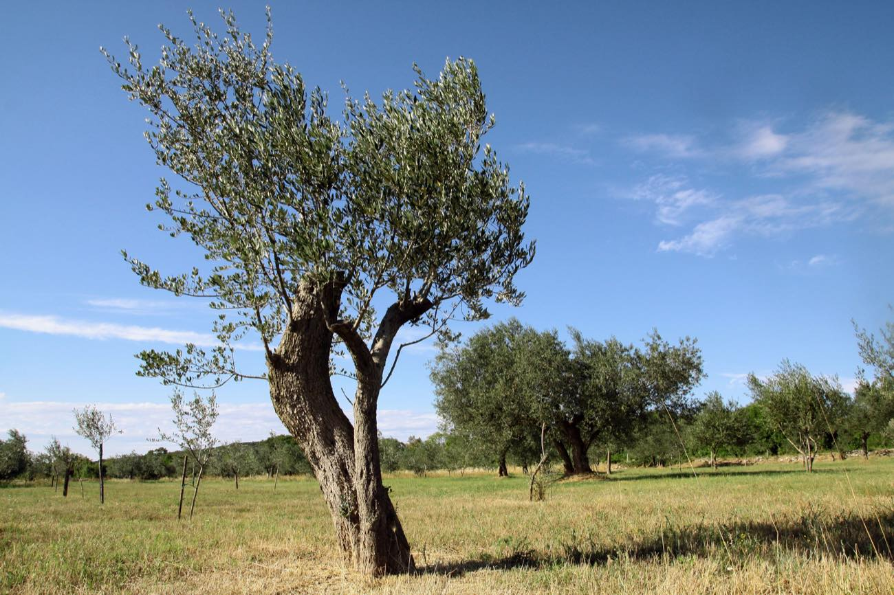
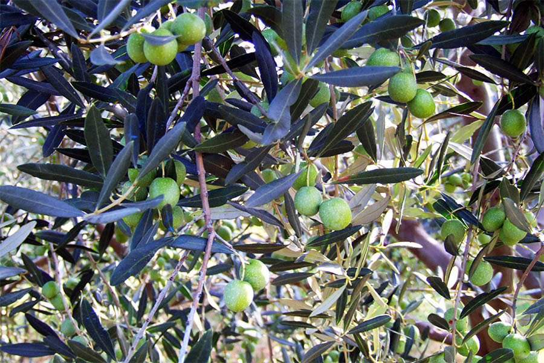
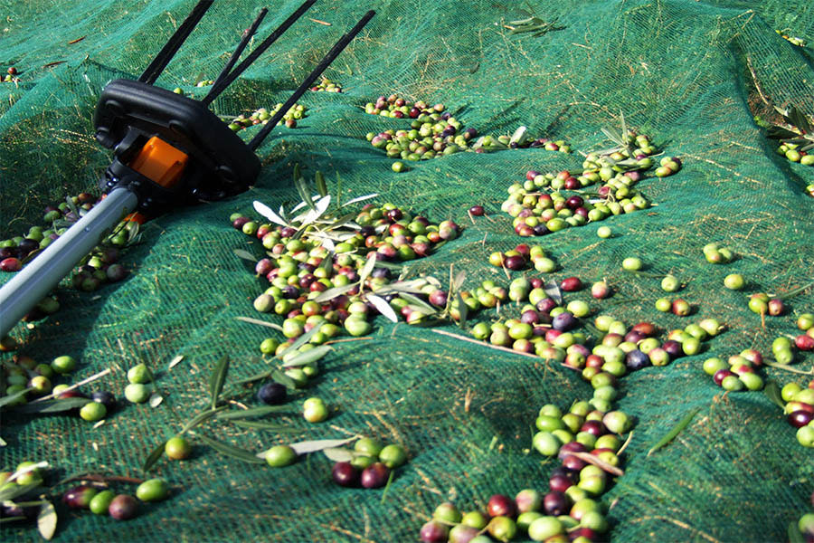
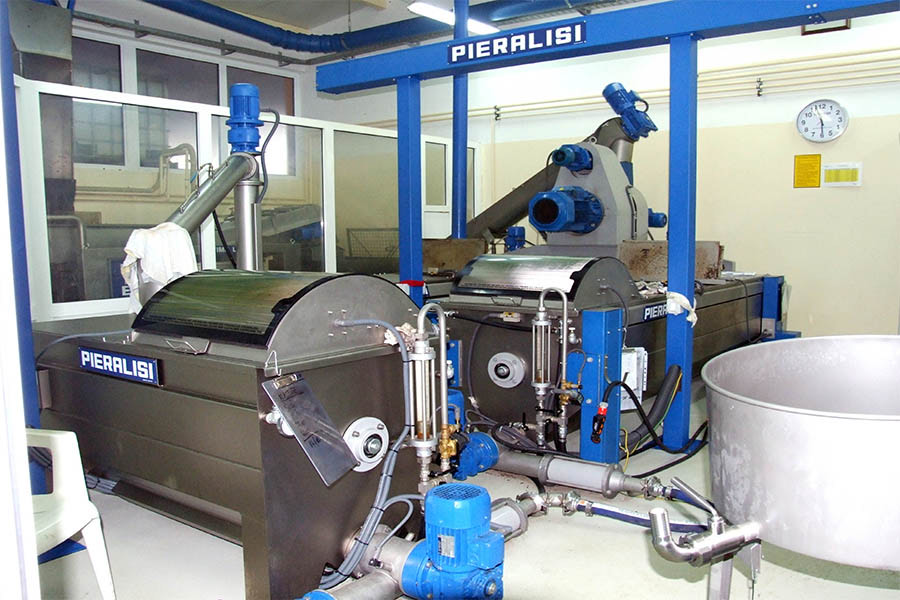
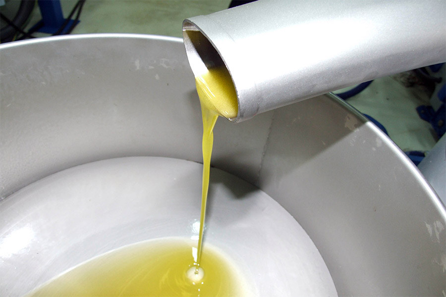
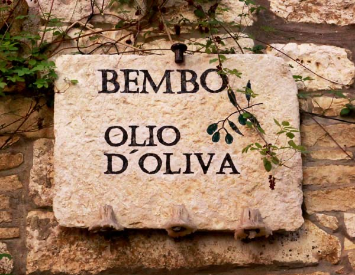
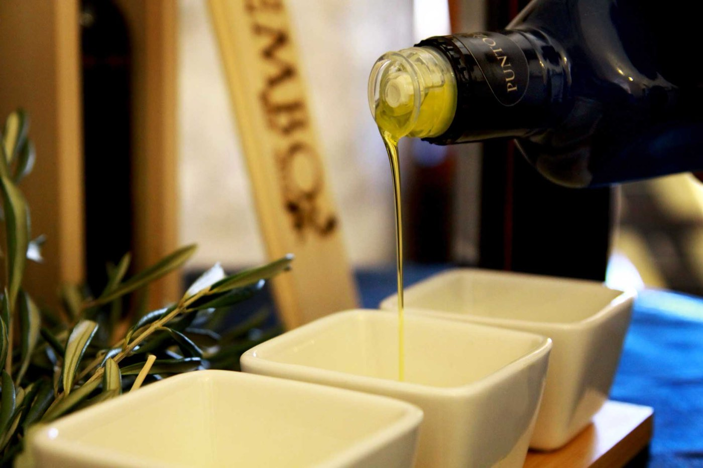

Buža
Monosortno
Izrazito svjež miris zelene rajčice, voćni okus ploda masline, ugodna gorčina i jače naglašena pikantnost, zahvaljujući kamenitom terenu i mikrolokaciji.

OPG Bembo · obitelj Lupić · Bale, Istra
Ekstra djevičansko maslinovo ulje od autohtonih istarskih i introduciranih sorti, s 30 hektara maslinika oko Bala. Kušajte ga u našoj kušaonici u starom dijelu mjesta.

O nama
Obiteljsko poljoprivredno gospodarstvo Elene i Vedrana Lupića iz Bala registrirano je 2009. godine, a djelatnost je započela još 2000., sadnjom prvog maslinika.
Od tada je očišćeno i stavljeno u funkciju 30 hektara zemljišta. Njeguje se tradicija uzgoja autohtonih sorti maslina, a zasađene su i neke introducirane sorte. Visokoj kakvoći ulja svjedoče brojna priznanja, već od prvih uroda.
Pogledajte priznanja„Područje Bala poznato je po uzgoju maslina još od doba starih Rimljana, a na Balskoj obali bila je prva luka u Istri iz koje se maslinovo ulje razvozilo po Rimskom carstvu.”
Ekstra djevičansko maslinovo ulje
Pet monosortnih ulja, među njima i stara baljanska sorta Negrolina, te izbalansirani cuvée.
Monosortno
Izrazito svjež miris zelene rajčice, voćni okus ploda masline, ugodna gorčina i jače naglašena pikantnost, zahvaljujući kamenitom terenu i mikrolokaciji.
Monosortno
Intenzivan miris, osnovni voćni okus ploda masline, aroma zelenih badema s tragovima artičoke i radiča. Izražena pikantnost i gorčina.
Monosortno
Intenzivan miris ploda masline i jabuke, blaga gorčina i pikantnost.
Monosortno
Vrlo često s aromom zelenih badema i svježe trave, osnovni voćni okus ploda masline, umjerena gorčina i pikantnost.
Posebna stara baljanska sorta
Svjež miris s notom šumskog voća, osnovni okus ploda masline, nježna gorčina koju slijedi izrazita pikantnost.
Mješavina sorti
Izbalansirano ekstra djevičansko ulje od različitih sorti maslina: svjež miris pokošene trave, voćni okus ploda masline, umjerena pikantnost.
Od masline do boce




Priznanje od posebne važnosti
Dodijeljena 2015. godine za revitalizaciju hrvatskog maslinarstva, pod pokroviteljstvom Predsjednice Republike Hrvatske.
Sva priznanja


Kušaonica
Na adresi Trg Tomaso Bembo 14 sjedište je gospodarstva, s prostorom u kojem možete kušati i kupiti ulje, a uz njega i masline u salamuri te prirodne sapune izrađene od maslinovog ulja. Veselimo se vašem dolasku.
Kontakt i narudžbe
Proizvode šaljemo i poštom: plaćanje je pouzećem, a trošak dostave snosi kupac. Za veće narudžbe postoji mogućnost rabata.
